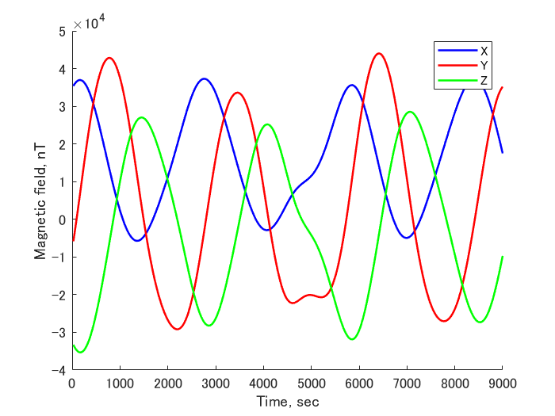
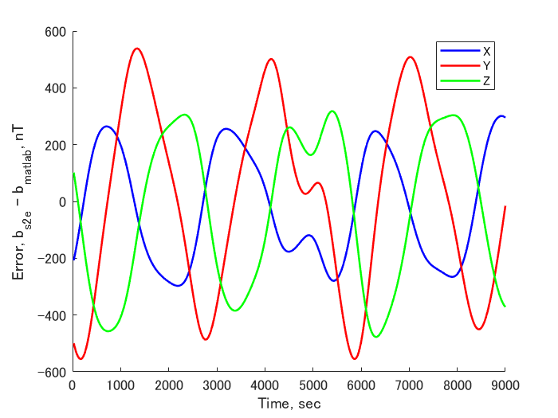

Specification for Magnetic field model
1. Overview
-
Functions
- MagEnvironment class calculates the geomagnetic field at the spacecraft's position from the IGRF model and adds noise to emulate the difference between the IGRF model and the real world.
-
Related files
src/Environment/MagEnvironment.cpp, .h- MagEnvironment class is defined.
src/Environment/Environment.cpp, .h- MagEnvironment class is used here as a member variable of Envir class.
src/Environment/Init_Envinronment.cpp- MagEnvironment class is instanced here based on the .ini file for environment.
src/Library/igrf/igrf.cpp, .h- A magnetic field in ECI and body-fixed coordinate is calculated by the IGRF model.
-
How to use
- Set a coefficient file path for the IGRF and random walk / white noise in .ini file
- Example
[MAG_ENVIRONMENT] calculation = ENABLE logging = ENABLE coeff_file = ../../src/Library/igrf/igrf13.coef mag_rwdev = 10.0 mag_rwlimit = 400.0 mag_wnvar = 50.0 CalcMag: Update the magnetic field (nT)Addnoise: Add noise to the result ofCalcMagGetMag_i: Return the magnetic field (nT) in the ECIGetMag_b: Return the magnetic field (nT) in the body-fixed coordinate
- Set a coefficient file path for the IGRF and random walk / white noise in .ini file
2. Explanation of Algorithm
- IGRF calculates the magnetic field based on a spherical harmonic expansion of magnetic scalar potential \( V \).
- The coefficients of the spherical harmonic expansion of \( V \) is updated by IAGA. The latest version is the 13th generation, and S2E uses this version.
- Please refer here for the details of IGRF.
3. Verification
- Overview
- The calculated magnetic field is compared with Matlab's IGRF function calculation in ECI.
-
Conditions for the verification
-
input files
- Default initialize files
-
initial values
- To check the result in an example orbit, the EndTime was changed to 9000 s.
StartYMDHMS=2020/01/01 11:00:00.0 EndTimeSec=9000 StepTimeSec=5 OrbitPropagateStepTimeSec=0.1 LogPeriod = 5 SimulationSpeed = 0 - Especially, we chose the following TLE for orbit calculation (ISS orbit).
tle1=1 25544U 98067A 20076.51604214 .00016717 00000-0 10270-3 0 9005 tle2=2 25544 51.6412 86.9962 0006063 30.9353 329.2153 15.49228202 17647
- To check the result in an example orbit, the EndTime was changed to 9000 s.
-
-
Results
-
Results of S2E 
-
Error between S2E and MATLAB
- The error is approximately 200―500 nT. This may be because the coefficients of S2E are 13th, but on the other hand, those of MATLAB are 12th. 
-
4. References
- International Geomagnetic Reference Field, https://www.ngdc.noaa.gov/IAGA/vmod/igrf.html#:~:text=The%20International%20Association%20of%20Geomagnetism,interior%2C%20its%20crust%20and%20its
- IAGA web page, https://www.ngdc.noaa.gov/IAGA/vmod/index.html
- MATLAB igrfmagm, https://jp.mathworks.com/help/aerotbx/ug/igrfmagm.html